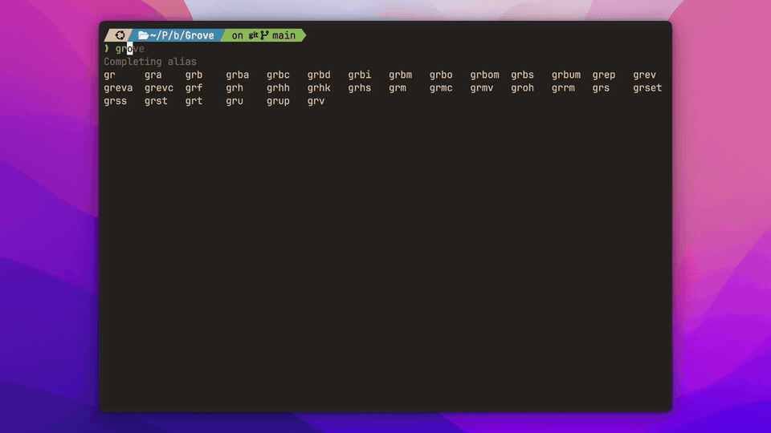

Manage your fleet from the command line
Every command and flag reaches the same engine as the TUI.

Find the right workflow
grove --helplists commands andgrove <topic> --helplists a topic's flags.grove skills list --detailslists every installed workflow andgrove skills show <name>reads one, with no daemon needed.- Any agent writes to another with
grove mailbox contactsthengrove mailbox send --to <id> --subject … --body …. A reply is the same command with the addresses swapped. See native sessions and the MCP learning path.
The contract
- Most commands resolve the repo from
cwdupward.daemon,auth,fleetandtickets ownedare host wide. - A WORKSPACE argument takes an exact id or a unique prefix, and an ambiguous one exits
1with the candidates. ls,fleetanddebugare JSON native and the session commands take--json.- Exit
0succeeds,1is a Grove error,2is bad input. No pagers, and no prompt butgrove kill's, which--yesskips.
grove
Launches the TUI at cwd. See the TUI tour and tab completion.
Read commands
Read workspace state and transcripts without changing them.
grove ls
Lists repository workspaces as JSON. See status semantics.
grove ls
# Every workspace that needs attention, without opening the TUI.
grove ls | jq -r '.[] | select(.status=="offline" or .status=="orphaned" or .status=="error") | "\(.status)\t\(.title)\t\(.branch)"'
grove fleet
Lists host workspaces as JSON.
grove show
One workspace's identity, git counts, agent state, task phase and todo list, recent turns and a live pane snapshot. The peek rail as a command.
grove show [WORKSPACE] [--last/-l N]
grove show # from inside a worktree, infers the workspace
grove show a1b2 -l 5 # by id prefix, last 5 turns
grove edit
Changes a workspace title or description.
grove edit [WORKSPACE] [--title TEXT] [--description TEXT]
grove edit --title "quota gateway" # from inside the worktree
grove edit a1b2 -d "spike, do not merge"
grove edit --description "" # clear the description
A title is 1 to 120 characters, an empty description clears it, --json returns the record, and the TUI and web dashboard rename through grove edit too.
grove phase
Sets or reads task phase.
grove phase [REF] [PHASE] [--note TEXT] [--ticket PROVIDER:ID] [--blocked] # set
grove phase [REF] # read
grove phase implementing --note "wiring the CLI verb" # from inside the worktree
grove phase a1b2 verifying # another workspace, by id prefix
grove phase verifying --ticket gitea:42 # scoped to one attached ticket
grove phase implementing --blocked # stuck on this step
grove phase # read the cwd-inferred phase, tickets included
- The phases are
scoping,planning,implementing,verifying,deliveringanddone, and a note is one line under 200 characters. --ticketscopes the claim to one attached ticket'sprovider:idfor a workspace working several at once.--blockedis a flag beside the phase, never a replacement for it.
grove sessions
Lists project conversations, newest first. grove sessions recollect recovers compacted instructions.
grove sessions list
--host scans every repo, see the Session Catalog. --since takes 30m, 6h, 2d, 1w or an ISO date.
# Which agents are waiting for a human?
grove sessions list --json \
| jq -r '.[] | select(.state=="waiting" or .state=="blocked") | "\(.state)\t\(.workspace_title // "-")\t\(.title // .last_prompt)"'
# Only what moved in the last two hours, five most recent.
grove sessions list --since 2h --limit 5
grove sessions show
grove sessions dump
grove sessions dump REF [--jsonl]
grove sessions dump 7b3f2c1a --jsonl | jq -c 'select(.type=="assistant")' # original lines verbatim
grove sessions recollect and grove recollect
Recovers every direct user query from a session, the workspace primary when omitted.
grove sessions recollect [SESSION] [--last/-l N] [--json]
grove recollect [SESSION] [--last/-l N] [--json]
# Recover the original task after a compaction.
grove recollect 7b3f2c1a
# Machine-readable most recent instructions.
grove sessions recollect 7b3f2c1a --last 3 --json
grove sessions remap
Pins the workspace primary session. See cli_sessions.py.
Lifecycle commands
Create, reach and remove workspaces.
grove create
Creates a worktree, branch and agent.
grove create [TITLE] [--agent/-a NAME] [--model/-m ID] [--runtime host|container] [branch flags] [--base REF] [--description/-d TEXT] [--no-init] [--prompt/-p TEXT] [--brief/--no-brief] [--native/--terminal] [--cwd PATH] [--resume-session ID] [--attach/--no-attach]
- Branch. Auto names one from the title,
--branchnames it off--base,--checkoutreuses a local branch,--trackfollows a remote one, and--rootruns in the repo root with no worktree. - Agent and model.
--agentmatches a name in your config,--modelis forwarded verbatim and never validated, and--nativeor--terminaloverrides the roster entry's session mode for this workspace. - Runtime and setup.
--runtime host|containeris create time only.--no-initskips the init script once,--cwdstarts the agent in a directory inside the worktree, and--briefor--no-briefdecides whether the agent gets Grove's first turn note. - The first turn.
--promptdelivers the first task at boot,--resume-sessioncontinues an existing session by id, and--attachhands your terminal over once it is up, which is the default when output is a terminal.
# Quick create: saved defaults, generated title, attached
grove create
# Auto branch (title slug → grove/fix-login-YYYYMMDD-HHmmss)
grove create "fix login" --agent claude
# Named branch off main
grove create "fix login" --agent claude --branch fix/login --base origin/main
# Reuse an existing local branch
grove create "review pr" --agent claude --checkout existing-wip
# Track a remote branch
grove create "track ci" --agent claude --track origin/feature/ci
# In-place (no worktree, no new branch)
grove create "in place" --agent claude --root
# Start working immediately
grove create "add cache" --agent claude --prompt "add an LRU cache in front of the API client"
# Start the agent in a monorepo's API directory
grove create "add endpoint" --agent claude --cwd services/api
Steer, pause, resume, respawn, kill, attach, shell
grove message a1b2 "now add a test for the empty case" # a direction to a running agent
grove pause a1b2 --force # drop worktree and session, keep the branch; --force discards uncommitted changes
grove resume a1b2 # rebuild a paused workspace from its branch
grove respawn a1b2 # recreate a vanished tmux session over the worktree
grove kill a1b2 --keep-branch -y # remove the workspace; --delete-branch or --keep-branch override provenance, -y skips the prompt
grove attach a1b2 # hand your terminal to the session
grove shell a1b2 # an interactive shell inside the container
A native workspace attaches read only. Its pane is Grove's worker printing one protocol frame per line, so steer it with grove message or the dashboards.
grove agent
Manages additional container agents.
grove agent list WORKSPACE
grove agent add WORKSPACE [--agent NAME] [--name SLOT] [--model ID] [--prompt TEXT]
grove agent attach WORKSPACE SLOT
grove agent peek WORKSPACE SLOT [--lines N]
grove agent message WORKSPACE SLOT TEXT
grove agent kill WORKSPACE SLOT [--yes]
grove agent add a1b2 --agent codex --name reviewer
grove agent message a1b2 reviewer "review the last three commits"
grove code
Opens a container workspace in VS Code. See Container Workspaces.
grove diagram
Opens, reads, updates or stops an existing .drawio file without creating or publishing it.
grove diagram open PATH
grove diagram read
grove diagram preview
grove diagram update INPUT --revision HASH --session-id ID
grove diagram stop --revision HASH --session-id ID
- Use the latest revision and session identity for
updateorstop. - Stopping leaves it readable. See Diagram collaboration.
grove tickets
Attaches tickets and hands issues to the fleet.
grove tickets attach REF [--workspace/-w ID]
grove tickets list [--workspace/-w ID]
grove tickets detach REF [--workspace/-w ID]
grove tickets handover REF
grove tickets owned
grove tickets handback REF
grove tickets attach https://github.com/acme/api/pull/42 # cwd-inferred workspace
grove tickets attach '#42' -w a1b2
grove tickets list
grove tickets handover 42 # assign Grove's account, start a workspace on it
grove tickets owned # every ticket Grove holds, host-wide, and whether work is live
grove tickets handback 42 # unassign, leaving any workspace alone
--workspacedefaults to the current worktree.- See ticket providers.
Using the CLI from an agent
A coding agent with shell access inside a Grove managed worktree has the full command surface, reading what siblings are doing and, when authorized, driving the same fleet.
- Pass
--jsonwhenever you parse the result. Treat a non zero exit as no data. - Stop at the first rung that answers your question.
listis cheapest,showandrecollectcost a few turns,dumpis the last resort and goes to a file, never your context.
# Sibling sessions: everything on this host except your own branch.
MY_BRANCH=$(git branch --show-current)
grove sessions list --json \
| jq -r --arg me "$MY_BRANCH" '
.[] | select(.git_branch != $me)
| "\(.session_id[0:8]) \(.state) \(.workspace_title // "-") \(.title // .last_prompt // "")"'
grove sessions list --since 1h # cheapest: what moved recently
grove sessions show a91e0d34 --last 5 # mid cost: a sibling's last turns
grove recollect a91e0d34 --last 5 # every direct instruction, including pre-compaction
grove sessions dump a91e0d34 --jsonl > /tmp/a91e0d34.jsonl # last resort
# Spin one up, steer it, check it, pause it.
grove create "add retry logic" --agent claude --prompt "wrap the API client's fetch with exponential backoff"
grove message a1b2 "now add a test for the retry case"
grove sessions show a1b2 --last 3
grove pause a1b2
Admin commands
One fence per verb. Each takes --help for its full flag set.
grove config show | jq '.worktree.root_template' # the resolved cascade for this repo, as JSON
grove config add-project /path/to/other-project # register a repo for host wide views
grove config init --with-onboarding # write .grove/config.json, install skills, register MCP
grove config schema --stdout # the JSON Schema, to disk without the flag
grove skills install -t user --agent claude # Grove skills for claude | codex | all
grove mcp install --target project --agent claude # this install as an MCP server
grove init devcontainer --force # a default .devcontainer/devcontainer.json
grove doctor --json # container requirements, as a table without the flag
grove version
grove debug # every resolved path and whether config loaded
grove init devcontainer and grove doctor serve Container Workspaces.
grove daemon serve
Runs the daemon behind the web dashboard. See the systemd user service.
--host defaults to loopback on purpose, see the security model. --port 0 picks a free one and --print-port prints it once listening.
grove auth
Manages pairing requests and active sessions. See authentication.
grove auth pending # requests waiting for approval, with their codes
grove auth approve <challenge-id> # or deny
grove auth sessions # active sessions
grove auth revoke <session-id>
GROVE_DEBUG=1
Sets standard error logging to DEBUG for one command while standard output stays pipeable JSON.
Tab completion
Install completion for your shell.
grove completions installfinds a directory without editing an rc file.- Zsh uses the first writable
fpathdirectory. Bash and fish autoload normally. grove completions show --shell zshprints a script for dotfiles.- Completion omits unavailable values.
What completes
- Every workspace argument completes to the ids in this repo with their title and branch.
--agentcompletes to your resolved config,--modelto that agent's catalog,--checkout,--trackand--baseto local and remote branches,--cwdto the configured working directories, and--resume-sessionto recorded session ids.grove phasecompletes both the six phase names and workspace ids,--ticketandgrove tickets detachcomplete attached tickets,grove agentverbs complete the agents live in the container, andgrove authverbs complete pending challenges and active sessions.
If nothing happens when you press Tab
Answering a completion means starting grove, about a second on a typical host, and some zsh completion frameworks give a completer far less than that and silently drop it.
- The common case is zsh-autocomplete, whose default budget is 0.4 seconds. Raise it in
~/.zshrcwith the line below. - Note the single trailing colon.
:autocomplete:is the exact context the setting is read from, and':autocomplete:*'does not match it. - To tell this apart from an install problem, run the round trip by hand with the command below.
- Candidates printed means Grove is fine and the shell is discarding them. Nothing printed is a real fault worth reporting.